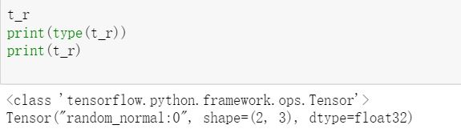
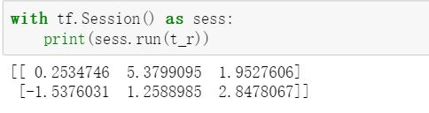

- TensorFlow支持三种类型的张量
- 常量：为值不可改变的张量(存储在计算图的定义中，是占用内存的)
- 变量：当一个值在会话中需要更新时，使用变量来表示。变量在使用前需要被显示初始化。
- 占位符：用于将值输入到TensorFlow的图中，可以和feed_dict一起使用来输入数据。在训练神经网络时，通常用于提供新的训练样本。且在运行计算图时，可以为占位符赋值。故在构建一个计算图时不需要真正的输入数据。因此占位符不包含任何数据，不需要初始化它们。
所有常量、变量、占位符将在代码的计算图部分中定义。如果在定义部分使用print语句，输出的不是它的值，而是有关张量类型的信息。

为了得到相关的值需要创建会话图，在会话图中进行输出。

TensorFlow程序的特点为，将程序分为两个独立的部分。1.构建神经网络蓝图，包括计算图的定义。2.在会话中执行计算图。正是图的定义与执行的分开设计让TF能够多平台及并行执行。
会话对象评估张量与操作对象的环境，不同的张量对象的值仅在会话对象中被初始化、访问和保存。在此之前张量对象只被抽象定义，在会话中才被赋予实际的意义。
- run函数原型：
run(fetches,feed_dict=None,options=None,run_metadata),其中运算结果在fetches中提取，为了得到fetches的结果所需的变量由feed_dict提供。
如何指定CPU或GPU操作
读取数据
在 TensorFlow 中可以通过三种方式读取数据：
- 通过feed_dict传递数据；
- 从文件中读取数据；
- 使用预加载的数据；